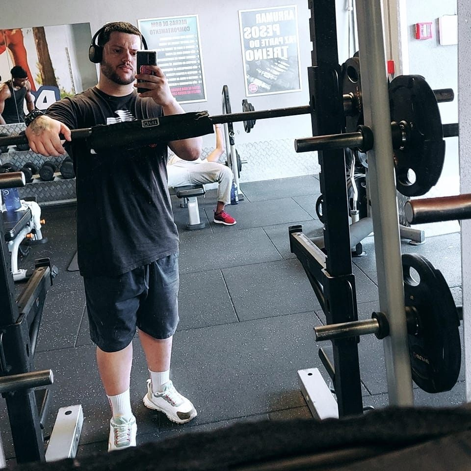

A
Peitoral
Supino inclinado - 4x12
Supino reto -
Pullover - 4x12
(Bi série) Crucifixo machine 4x8 + crossover 4x8 + fleca 4x8
Ant Ombro
Elevação frontal - 4x12
Arnold Press - 4x12
Lat Ombro
Elevação diagonal - 4x12
Elevação lateral polia média - 4x12
B
Quadriceps
Cadeira extensora: 1x20, 1x18, 1x15, 1x12
Agachamento frontal: 4x12
Agachamento Bulgaro: 4x12
Agachamento Sissy: 4x8
Post Coxa
Ísquios com carga: 4x12
Cadeira Flexora:
Stiff com barra: 4x12
Stiff com Halteres: 4x12
C
COSTAS
Remada Baixa - 4x12
Pulley frente - 4x12
Barra Fixa - 4x12
Remada Cavalinho - 4x12
Puxada Unilateral - 4x12
Post ombro
Cruxifixo invertido - 4x12
Cruxifico invertido diagonal para trás - 4x12
D
Bíceps
Rosca martelo - 4x12
Rosca Concentrada - 4x12
Rosca com W - 4x12
Rosca Unilateral - 4x12
Tríceps
Triceps corda -
Supino Fechado - 4x12
Pulley Testa - 4x12